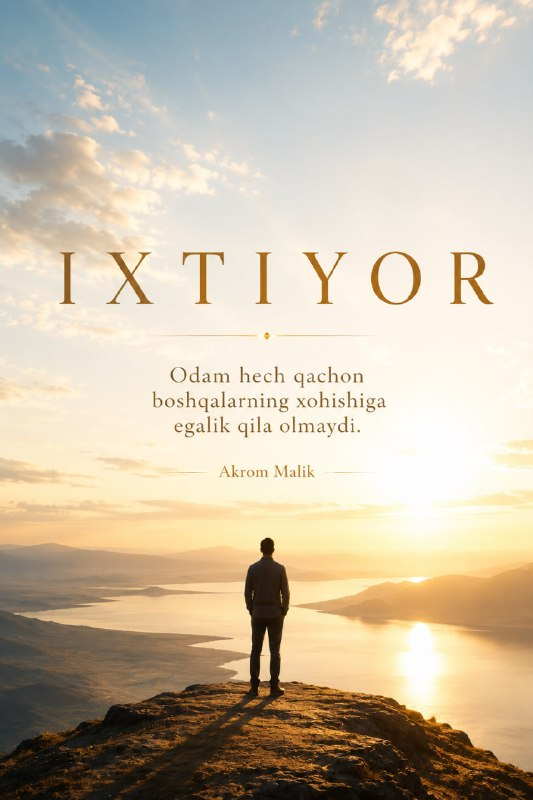

Hayotimizdagi ishlar ikki qismdan iboratdir: bizning ixtiyorimizdagi ishlar…

Hayotimizdagi ishlar ikki qismdan iboratdir: bizning ixtiyorimizdagi ishlar, bizning ixtiyorimizdan tashqaridagi ishlar. Aqiyda ilmida inson ixtiyorini kulliy ixtiyorning juz’i deyiladi. Kulliy ixtiyor – ixtiyor qilmoqning hammasi Xudodadir; bu ixtiyorning kichik qismi insonga ham berilgan, uning nomi juz’iy ixtiyor deyiladi. Yoki bu ma’noni istitoat kalimasi ham ifodalaydi.
Inson soat nechada uxlashi, uyg‘onishi; yaxshi so‘zlarni aytishi yoki yomon so‘zlarni tanlashi; halol mehnat qilishi yoki harom-harish yeb-ichishi; ibodat qilishi yoki undan yuz o‘girishi – bularning barchasi juz’iy ixtiyordagi yoki istitoatdagi ishlardir. Chunki aql bu ishlarda odam ikki ishdan birini tanlashini tasdiqlaydi: soat kechki o‘ndayoq uxlash ham mumkin; gaptashirni titib, har narsani ko‘rib tunni yarmidan o‘tkazib, uxlolmasligi ham mumkin; kitob o‘qish yoki youtubeda sang‘ish – bularning qay birini bajarish har kimning o‘z qo‘lida.
Lekin erkak yo ayol bo‘lib tug‘ilishi; kimning farzandi bo‘lishi; qaysi yurtda qaysi zamonda dunyoga kelishi; rizqning keng yo tor bo‘lmog‘i, ajalning muddati va shu kabilar insonning ixtiyoridan tashqaridadir.
Odamzod ixtiyoridan tashqari ishlar uchun qayg‘urmasligi matlubdir. Chunki uni o‘zgartirishning aslo iloji yo‘q. Lekin o‘zi qila oladigan va imkoni doirasidagi amallar haqida g‘am cheksin. O‘zining nafsiga bo‘ysunib qilgan gunohlarini zimmasiga olib tavba qilsin; dangasalik ila har xil malomatlarga giriftor bo‘lgani uchun o‘zini ayblasin va bu ishlarni qilib tugatgach, o‘tmish xatolarini takrorlamaslikka intilsin. Ya’ni nafsini zanjirdan chiqarmasin; erta uxlab, erta uyg‘onsin; mehnat qilsin; halol yeb-ichsin; zulm qilmasin; harom yurmasin va hokazo.
Ba’zida insonlarni ularning yaqinlari tark etadi. Bu ikki sabab ila yuz beradi. Birinchisi, o‘lim do‘stlarni ayiradi. Ikkinchisi ketgan tomonning xohishi bilan bo‘ladi. Odam hech qachon boshqalarning xohishiga egalik qila olmaydi, bu uning ixtiyorida emas; demak, qaysi sabab bilan bo‘lmasin, ketganlar haqida g‘am chekmaslik lozim. Chunki bu sening qo‘lingda emas edi. Odamlarni o‘z ixtiyorlariga qo‘y. Har kim o‘z hayotini yashasin, boshqalarga xo‘jayinlik qilaman desang, hatto buni yaxshi niyatda, o‘sha boshqaning foydasi uchun qilsang ham, nafratga uchraysan.
Imkoniga ko‘ra harakat qilgan yutadi. Xudo adolatli Zotdir. U har kimga shunday imkon berib qo‘yganki, uning barchasini ishlatgan odam, albatta, qalbi, nafsi va aqli rozi bo‘ladigan natijaga erisha oladi. Buni anglay olish uchun hikmat ko‘zi lozim, xolos. Ko‘zni esa yo jaholat, yo g‘aflat pardalaydi.
So‘zimiz so‘ngida aytaylik: insondagi juz’iy ixtiyor ham Xudoning ixtiyoridadir. Buning qandayligi va sirini banda anglashdan ojiz, zotan, ojiz bo‘lmog‘i tabiiy, chunki u banda, U esa Xudo. Xudoning hamma ishini tushunish bandaning ishi emas. Bandaning ishi itoat va bo‘ysunishdan iboratdir.
Akrom MALIK